이전 글을 보고 오시지 않은 분들께 추천드립니다.
2023.01.11 - [딥러닝/기초 공부] - [확률/통계] 2. 베이지안 결정 이론 1 + ppt, 연습문제 (패턴인식 - 오일석)
2023.01.13 - [딥러닝/기초 공부] - [확률/통계] 2. 베이지안 결정 이론 2 + ppt, 연습문제 (패턴인식 - 오일석)
2023.01.13 - [딥러닝/기초 공부] - [확률/통계] 2. 베이지안 결정 이론 3 + ppt, 연습문제 (패턴인식 - 오일석)
[확률/통계] 2. 베이시언 결정 이론 3 + ppt, 연습문제 (패턴인식 - 오일석)이전 글을 보고 오시지 않은 분들께 추천드립니다. 2023.01.11 - [딥러닝/기초 공부] - [확률/통계] 2. 베이시언 결정 이론 1 + ppt, 연습문제 (패턴인식 - 오일석) [확률/통계] 2. 베이시언 결정 이론 1 + ppimkmsh.tistory.com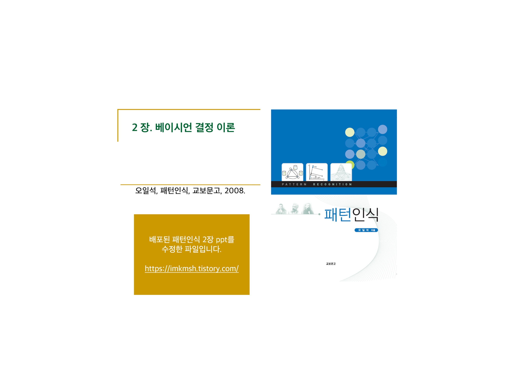
2.4 정규 분포에서 베이지안 분류기
이번 글에서는 훈련 집합을 정규 분포로 모델링하고 베이지안 분류기를 만들어 보겠습니다. 정규 분포는 가우시안 분포라고도 부릅니다. 새로운 분류기를 만들자는 이야기는 아닙니다. 이전의 베이지안 분류기를 그대로 이용합니다. 단지 우도가 정규 분포를 따르는 특수한 경우에 대해 분류기가 가지는 성질을 분석하는 것이 목적입니다. 특히 두 부류의 영역을 나누는 결정 경계가 어떤 모양을 갖는지에 대한 분석이 주를 이룹니다.
정규 분포는 몇 가지 특성을 가집니다.
1. 현실 세계에 맞는 경우가 적지 않습니다. 예를 들어 키와 몸무게 등은 정규 분포에 가깝습니다.
2. 평균과 분산이라는 두 개의 매개 변수만으로 확률 분포가 표현됩니다. 따라서 훈련 집합으로 정규 분포를 추정할 때는 이 두 매개 변수만 찾아내면 됩니다.
3. 수학적으로 매력적입니다. 예를 들어 두 개 부류의 공분산 행렬이 모두 단위 행렬이라면 두 부류의 결정 경계는 직선이라는 사실을 쉽게 증명할 수 있습니다.
우도가 정규 분포를 따른다는 가정 하에 베이지안 분류기의 특성을 해석해 봅시다.
2.4.1 정규 분포와 분별 함수
정규 분포
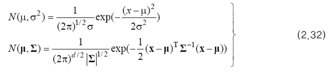
정규 분포는 위와 같이 정의됩니다. 특징 벡터가 1차원인 경우와 d차원인 경우로 구분하고 있습니다. 아래는 1차원과 2차원의 정규 분포의 예시입니다.
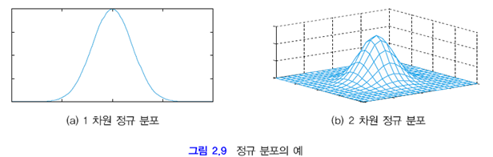
부류 wi 가 정규 분포를 따른다고 가정하면 우도를 아래와 같이 쓸 수 있습니다.
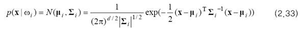
2.3절의 분별 함수를 생각해 봅시다. 단조 증가 함수로 자연 로그 함수 ln을 사용하면 위 식의 지수를 없앨 수 있을 뿐만 아니라 곱하기와 나누기를 덧셈으로 바꿀 수 있습니다. 이를 정리하면 아래와 같습니다.
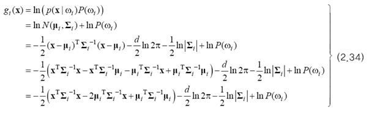
네 번째 줄의 수식이 다섯 번째 줄로 변하는 것은 ∑^(-1)이 대칭 행렬이므로 가능합니다.
부류 wi의 분별함수 gi(x)는 x에 대한 2차 식입니다.
결정 경계
두 부류가 차지하는 영역의 경계를 말합니다. gi(x)=gj(x)인 점, 즉 gij(x)=0인 점들의 집합이 결정 경계가 됩니다. 아래 그림은 이러한 관계를 보여줍니다. gij(x)를 결정 경계 함수라고 부릅니다.
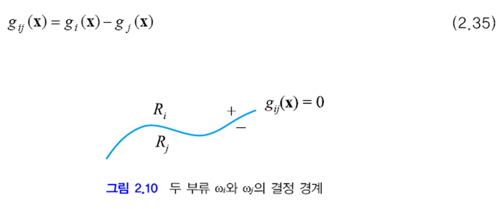
2.4.2 선형 분별
이 절은 모든 부류의 공분산 행렬이 같은 경우를 다룹니다. 아래처럼 표기할 수 있습니다.
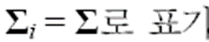
(2.34)에서 부류를 나타내는 첨자 i에 따라 달라지는 항과 i에 무관한 항을 구별하여 다시 쓰면 (2.36)이 됩니다.
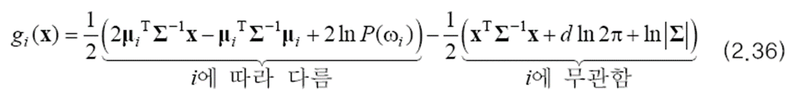
이 식에서 i에 무관한 항은 모든 부류가 같은 값을 가지므로 제거해도 됩니다. 따라서 유일한 2차 항인 xTΣ-1x 이 없어지고, 분별 함수 g(x)는 1차 식이 됩니다. 이를 선형 방정식 형태로 다시 정리하면 (2.37)을 만들 수 있습니다.
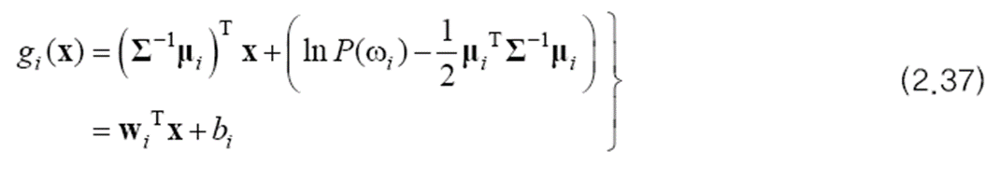
이 결정 경계는 어떤 모양을 갖는 지가 궁금하기 때문에 (2.35)에 (2.37)을 대입해 봅니다.
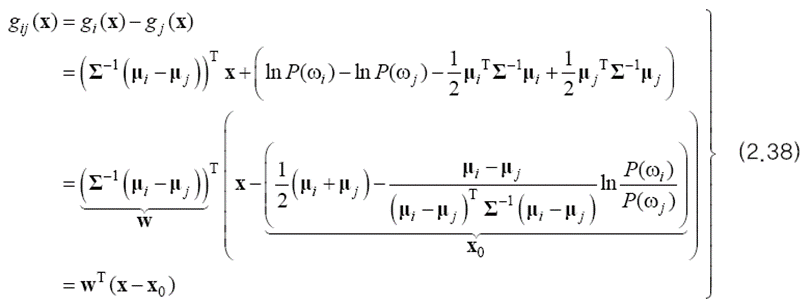
이 식을 기하학적 관점에서 해석해 봅시다. 결정 경계 상의 점 x는 gij(x)=0이어야 하는데 gij(x)가 1차 식이므로 결정 경계가 초평면이라는 사실을 알 수 있습니다. 아래 그림처럼 2차원에서는 결정 경계가 직선이 됩니다. 두 부류의 정규 분포를 등고선 형태로 표시했는데 두 부류의 공분산이 같이 때문에 그들은 모양과 방향이 같은 타원입니다.
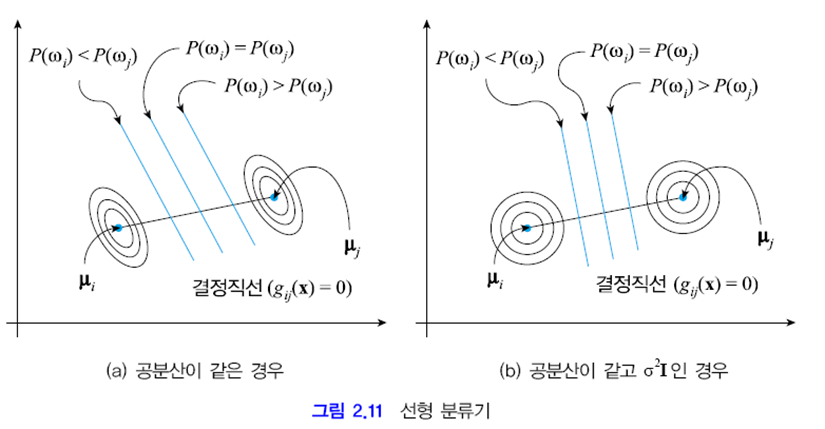
지금까지 모든 부류가 같은 공분산을 갖는다는 가정 하에 결정 경계를 위한 수식을 유도하였으며 결국 선형 분류기를 얻었습니다. 이러한 과정을 거쳐 선형 분류기를 만드는 방법을 선형 분별 분석(LDA)이라고 합니다.
예제 2.5 선형 분별 분석 (LDA)
두 부류가 네 개씩의 샘플을 가졌다고 합시다. 이들을 특징 벡터로 표시하면 아래와 같습니다.
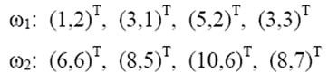
평균 벡터와 공분산 행렬을 계산하면 아래와 같습니다. 두 부류의 공분산이 같습니다.
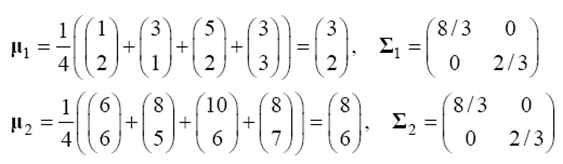
위에서 구한 공분산이 (b)의 경우가 아니고 (a)인 것을 알 수 있습니다. g12(x)를 구해보면 아래와 같습니다.
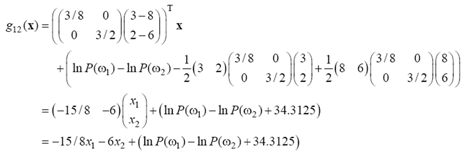
결정 경계 함수 g12(x)=0으로 두고 사전 확률을 바꿔 가며 결정 직선을 구해 보면 아래와 같습니다.
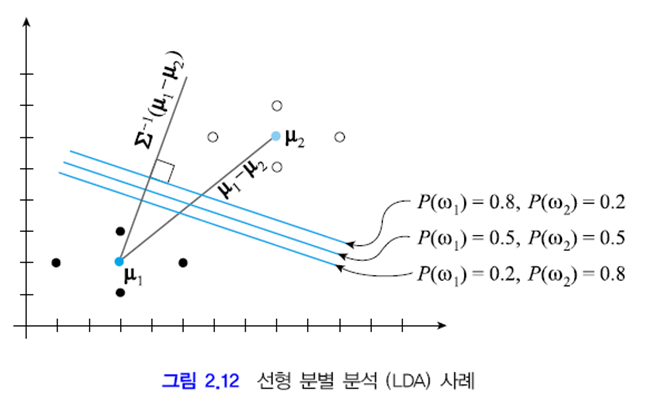
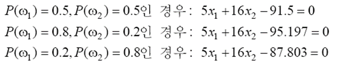
2.4.3 2차 분별
공분산 행렬에 아무 제약이 없다고 해봅시다. 아래와 같이 등고선의 모양과 방향이 서로 다르면, 무시할 수 있는 항은 (d/2)ln(2π) 뿐입니다. 이 항을 버리고 식을 다시 쓰면 아래와 같은 식이 됩니다. 결정 곡선은 경우에 따라 쌍곡선도 되고 타원도 됩니다. 2.4.2절과 다른 점은 공분산 행렬에 대한 가정이고 이에 따라 이번에는 2차 분류기를 얻었습니다. 이러한 방법을 2차 분별 분석(QDA)이라고 합니다.
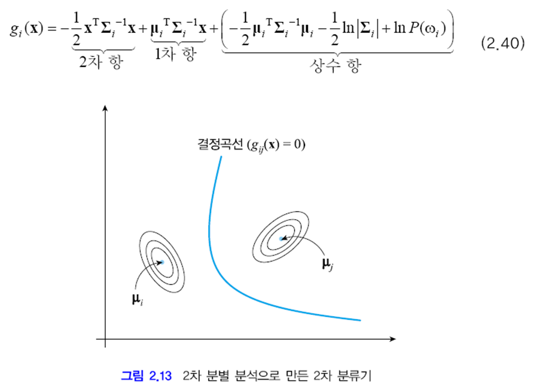
예제 2.6 2차 분별 분석 (QDA)
위의 예제에서 w2의 분포가 바뀌었습니다.
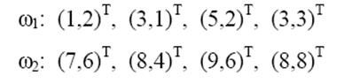
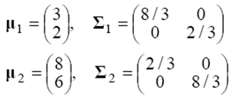
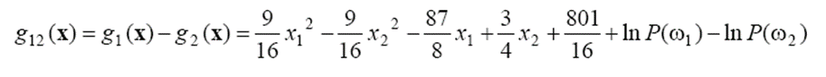
결정 경계 함수 g12(x)=0으로 두고 사전 확률을 바꿔 가며 결정 곡선의 방정식을 구해 보면 아래와 같습니다.
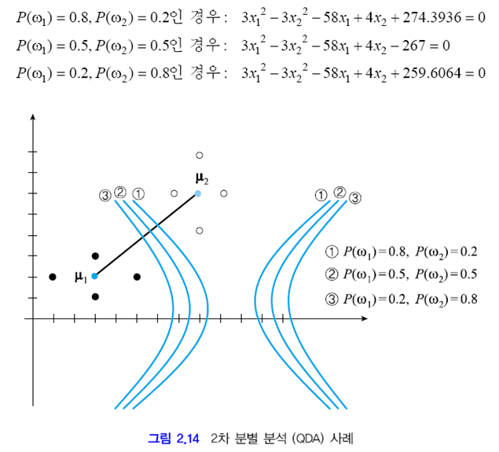
2.4.4 최소 거리 분별기
두 부류의 사전 확률과 공분산 행렬이 같다고 가정하고 (2.34)를 다시 쓰면 아래와 같습니다. 이때 셋째 줄에서 상수가 되는 것을 제외하고 다시 쓴 것입니다.
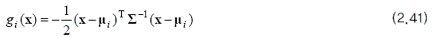
베이지안 분류기는 (2.41)의 gi(x) 값이 가장 큰 부류로 분류합니다. 즉 마할라노비스 거리를 최소로 한다는 것입니다. 마할라노비스 거리의 식은 아래와 같습니다. 2.4.2절에서 다룬 공분산 행렬이 특수한 경우에서는 유클리드 거리와 같습니다.
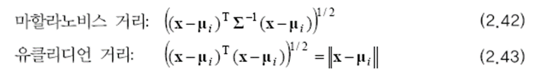
마할라노비스 거리는 절대적인 거리를 측정하는 유클리드 측정과 다르게 데이터 사이의 맥락, 즉 표준 편차를 활용하는 개념입니다. 아래의 주황색 점끼리의 거리와 노란색 점끼리의 거리는 서로 같지만, 그 맥락은 다릅니다. 주황색 점은 맥락상 더 가깝고 노란색 점은 맥락상 더 먼 거리에 있죠. 그래서 데이터를 정규화 시킨 후에 유클리드 거리를 측정하는 것이 마할라노비스 거리입니다.
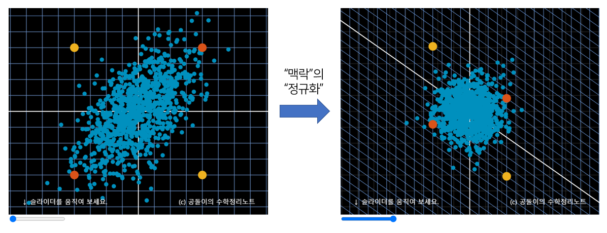
예제 2.7 마할라노비스 거리
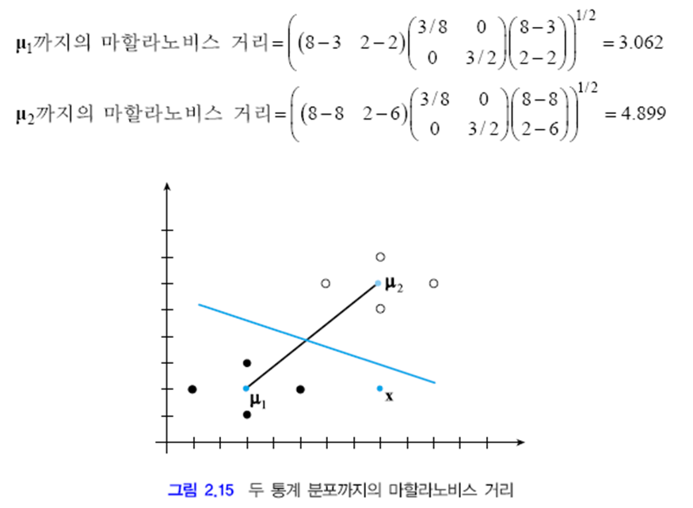
유클리드 거리 상 x는 μ2에 더 가깝습니다. 하지만 마할라노비스 거리를 계산해 보면 μ1에 더 가까운 것을 알 수 있습니다. 따라서 베이지안 분류기를 최소 거리 분류기 형태로 제시하면 아래와 같습니다.
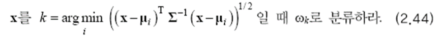
출처:
패턴인식 - 오일석